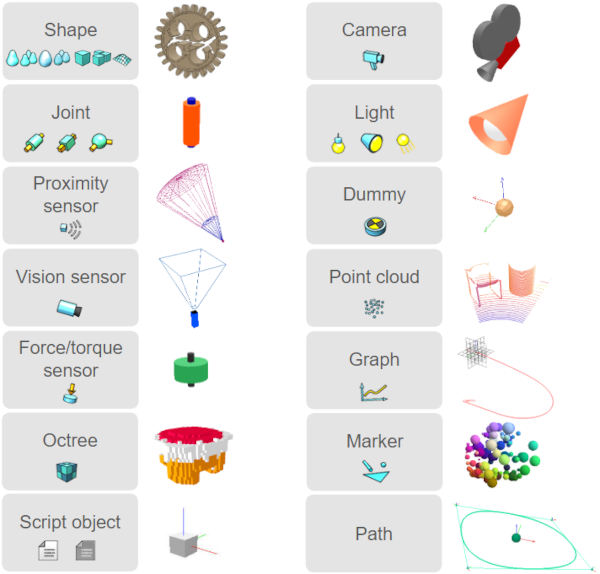

|
Scene objectsA scene object is of type sceneObject, which derives from the base class object. The main elements in CoppeliaSim that are used for building a simulation scene are scene objects. They are visible in the scene hierarchy and in the scene view. In the scene view, scene objects have a three dimensional representation as illustrated in following figure:  [Scene object types in CoppeliaSim and their 3 dimensional representation] Following list gives a brief functional description of each scene object type: Some of above scene objects can have special properties allowing other scene objects or various functionality to interact with them. They can be: Each scene object has a pose within the simulation scene. Objects can be attached to other objects (or built on top of each other). If object A is built on top of object B, then object B is the parent and object A is the child. To create a parent-child relationship between object B and object A, select object A, then select object B. Then select [Edit > Set parent, keep pose(s)]. Alternatively, you can drag and drop an object onto another in the scene hierarchy to obtain a similar result. Notice that object A's absolute pose was not changed. However, looking at the scene hierarchy, you can see that object A became child of object B. If you now move object B, object A will automatically follow, since object A is attached to object B. Object A can be detached by selecting it, then selecting [Edit > Set parent-less]. Doing so detaches object A without changing its pose. Alternatively, you can drag and drop an object onto the world icon to obtain a similar result. Every scene object has an absolute pose (or cumulative pose) that is relative to the world's reference frame, and a local pose (or relative pose) that is relative to the parent object's reference frame. In above example, when object A became child of object B, object A's absolute pose didn't change, but its local pose was modified. Refer also to the sceneObject.pose and sceneObject.worldPose properties. The absolute pose of the last selected scene object is displayed in the information text. To modify or adjust the absolute or local pose of an object, refer to the coordinates and transformations dialog and the section on object position/orientation manipulation. Refer also to sim.scene:createObject and sceneObject-related methods and properties. |